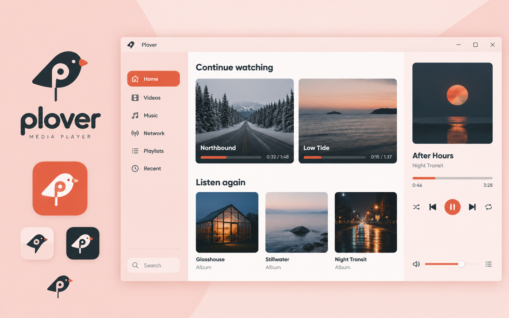
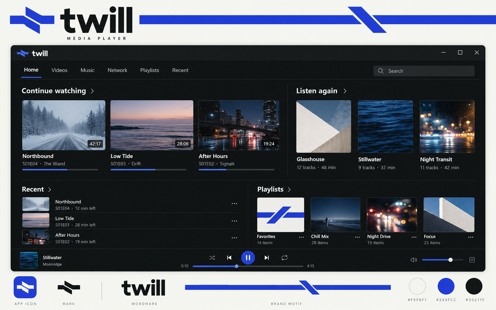
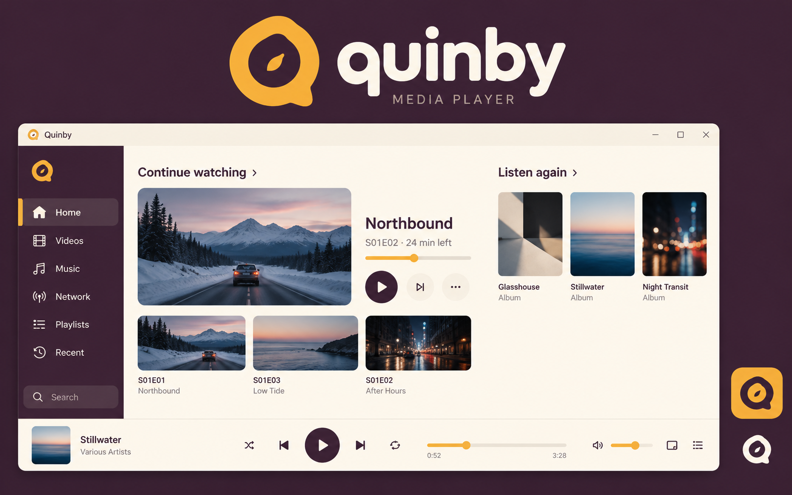
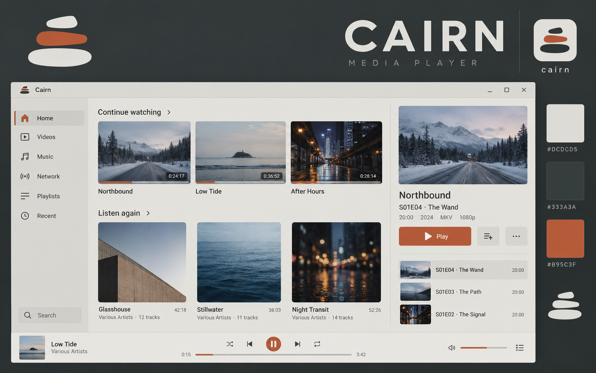
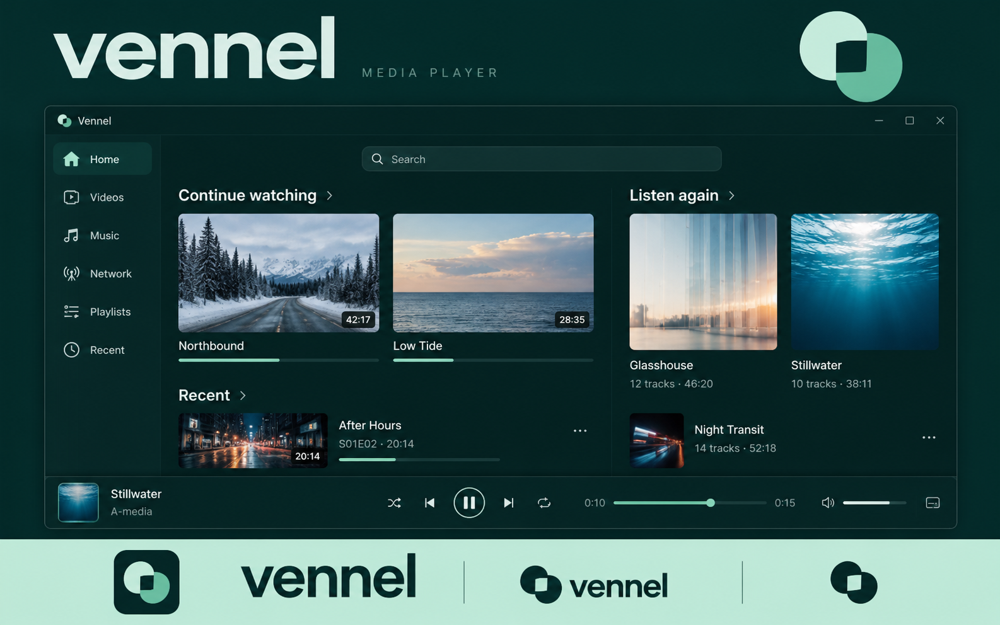
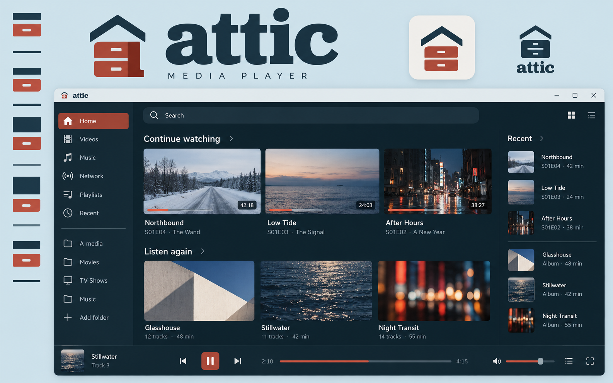
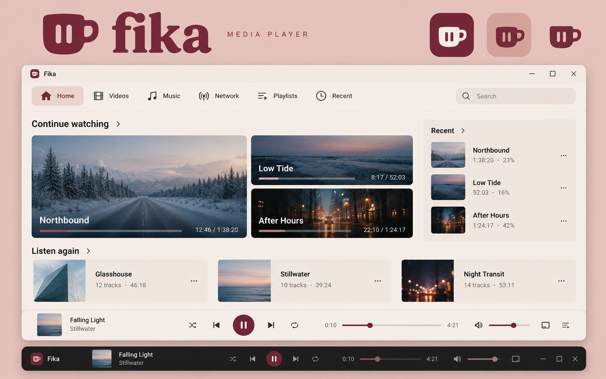
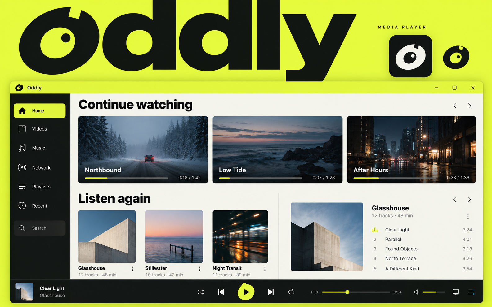
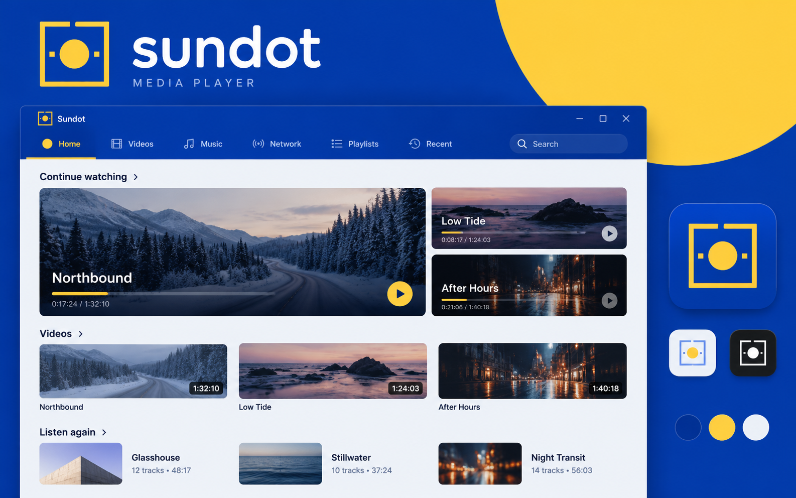
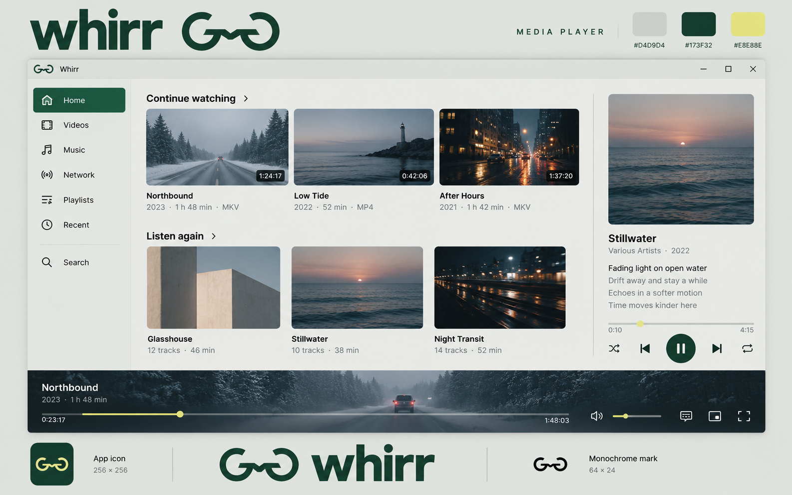

01 · PloverПерсонаж

02 · TwillМатериал

03 · QuinbyПредмет и вкус

04 · CairnОриентир и порядок

05 · VennelГеометрия и объединение

06 · AtticМесто и коллекция

07 · FikaРитуал и пауза

08 · OddlyХарактер и типографика

09 · SundotОптика и свет

10 · WhirrМеханика и движение
